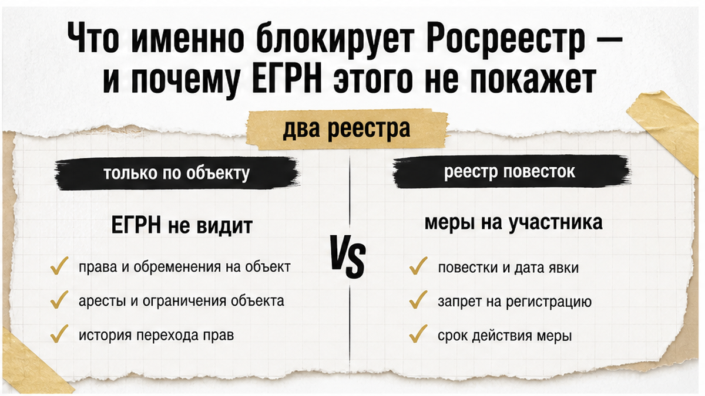
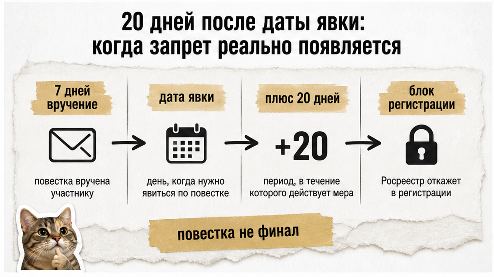
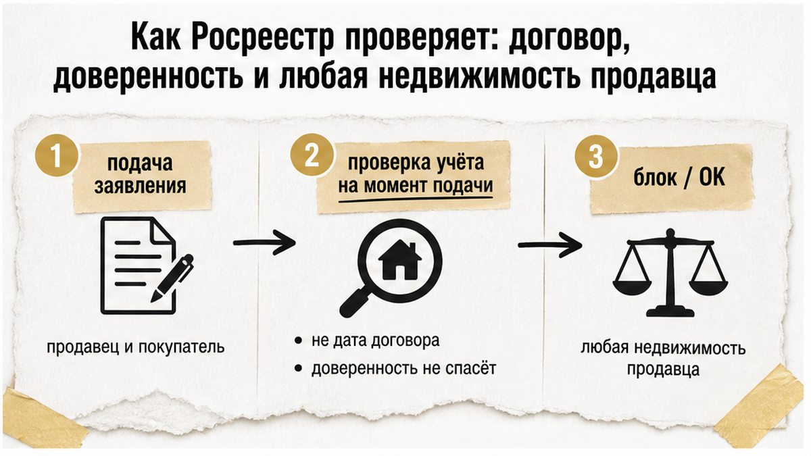
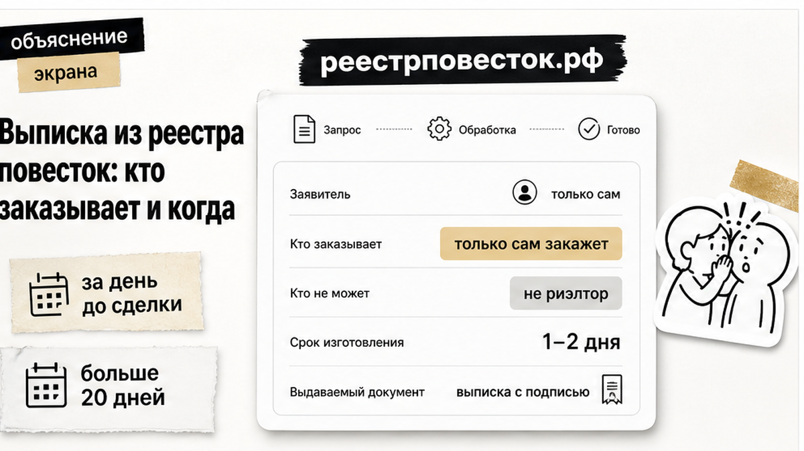
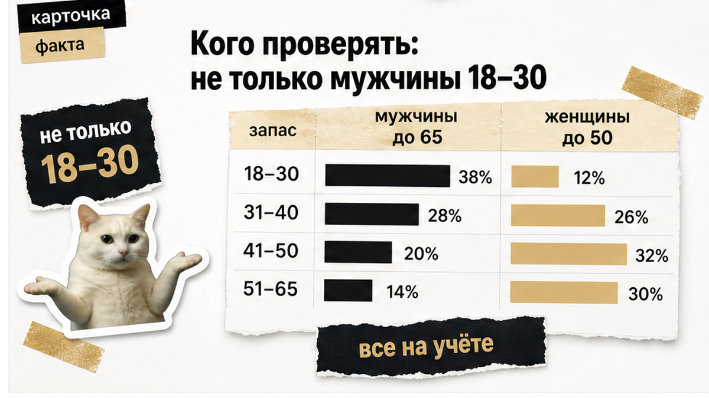
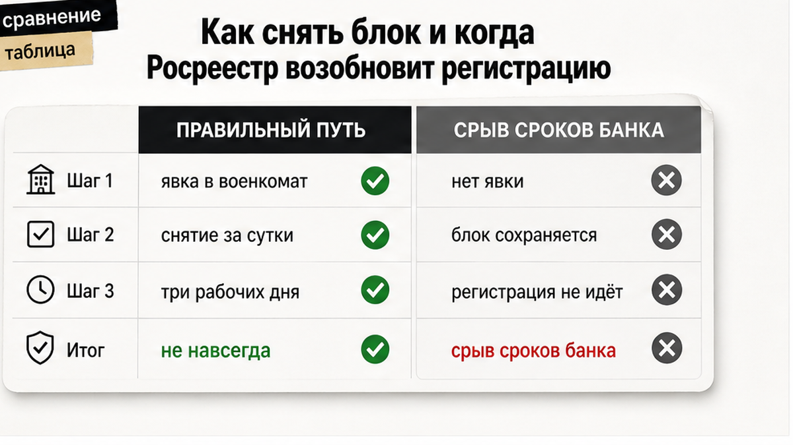

Приветствую. Я Святослав Шакин — риэлтор в Тюмени. Веду сделку сам: от звонка до регистрации, без ротации «ваш брокер сегодня другой». Покажу, что поднять до аванса, если в сделке участвует военнообязанный — и почему «чистая» квартира по ЕГРН тут не спасает.
На вторичке в Тюмене сделка часто уже разогнана: аванс внесён, банк держит ипотечный трек, сроки по одобрению не ждут. И вдруг регистрация в Росреестре встаёт — не потому что с квартирой что-то не так и не потому что в ЕГРН всплыло обременение. Стоп из‑за статуса продавца в воинском учёте: он не явился по повестке, прошло двадцать календарных дней после даты явки, и в реестре повесток появилась временная мера — приостановление кадастрового учёта и государственной регистрации прав на недвижимость. Деньги и сроки уже в движении, собственником покупатель ещё не стал.
Быстрый инсайт

ЕГРН отвечает на вопрос «что с объектом»: обременения, аресты, залог банка, споры. Он не показывает, есть ли у продавца или покупателя решение о временных мерах из единого реестра повесток.
Нормативная база:
Ограничения по сделкам с недвижимостью вступили в силу с 14 апреля 2025. Всплеск обсуждений в августе 2026 в СМИ — не «новый закон с этой даты», а отклик на уже работающий механизм и рост запросов выписки у риелторов.
| Что проверяете | Что видите | Чего не видите |
|---|---|---|
| Выписка / отчёт по ЕГРН | Обременения, права, ограничения на объект | Повестки, неявка, временные меры на участника |
| Выписка из реестра повесток | Повестки, даты вручения и явки, применённые временные меры | Состояние квартиры, залоги, судебные споры по объекту |
Не сравнивайте только выписку по объекту. Два разных реестра — два разных вопросы. Пока смотрите только ЕГРН, дыра в участнике остаётся закрытой.

Ключевое: направленная или врученная повестка ещё не равна запрету на сделку. Запрет наступает после 20 календарных дней с даты явки, указанной в повестке, если гражданин не явился и уважительная причина не подтверждена.
Для электронной повестки: она считается врученной через 7 дней после размещения в реестре повесток — даже если уведомление на Госуслугах пропущено. После этого отсчёт к 20-дневному сроку идёт от даты явки в повестке.
В реестре формируется решение о применении временных мер (подпись военкома электронной подписью). Сведения автоматически уходят в Росреестр и другие ведомства. Если в выписке есть только повестка, а 20 дней после даты явки ещё не прошли — запрета на регистрацию по недвижимости может ещё не быть.
| Этап | Что происходит |
|---|---|
| Повестка размещена в реестре | Через 7 дней — вручение электронной повестки (без личного визита в военкомат для «получения бумаги») |
| Дата явки в повестке | Гражданин должен явиться в указанный день |
| + 20 календарных дней без явки | Возможны временные меры, включая блок регистрации прав на недвижимость |
| Решение в реестре | Данные уходят в Росреестр; проверка при подаче заявления на регистрацию |
Повестка в выписке — не финал. Финал — строка о применённых мерах и календарь: дата явки плюс двадцать дней.

Росреестр смотрит статус участников на момент рассмотрения заявления на регистрацию, а не на дату подписания договора купли-продажи. Схема «подписали ДКП до запрета — всё ок» не работает: если до фактической регистрации в реестре повесток появилась мера, регистрацию приостанавливают или отказывают.
Дополнительные нюансы:
Доверенность — не «ну бумажка же есть». Если продавец «в командировке до пятницы», а мера в реестре уже есть — подписант заявления не спасает переход права.
Весной 2026 в Самарской области запасник получил электронную повестку (ноябрь 2025), не явился. В апреле 2026 Росреестр приостановил регистрацию прав на недвижимость; ведомство само запросило военкомат. Это подтверждённая практика обмена данными, а не гипотетический сценарий.
Для Тюмени контекст другой по темпу сделок, но механизм тот же федеральный:
Итог: быстрые сделки, крупные авансы и жёсткие банковские сроки. Приостановка регистрации здесь бьёт сильнее, чем на спокойном рынке — деньги уже в движении, а право ещё не перешло.

Выписка не входит в обязательный госпакет для сделки. Это добровольная доппроверка, которую в августе 2026 всё чаще просят у участников сделки (отраслевые СМИ и практика сетей риелторов).
Жёсткие правила:
Рекомендация экспертов из разборов: запрашивать выписку за 1–2 дня до подачи в Росреестр. Если между авансом и регистрацией проходит больше 20 дней — запрашивать повторно перед сделкой. Один раз «проверили месяц назад» не закрывает риск: за этот период могла прийти повестка, пройти дата явки и истечь 20 дней.
Не путать с выпиской из реестра воинского учёта — это разные документы (две разные выписки, разные реестры).
Я не выгружу выписку за продавца — никто, кроме него самого. Зафиксируйте это в переписке до аванса, а не «на словах у кофе».

Риск не ограничен «молодыми призывниками»:
На практике в Тюмени разумно обсуждать выписку с любым участником, кто на воинском учёте — не отсекать по возрасту «он уже не призывной».

После явки в военкомат или подтверждения уважительной причины решение о временных мерах отменяется. По данным Контур.Реестро, снятие ограничения может произойти в течение суток после явки.
Росреестр возобновляет регистрацию не позднее 3 рабочих дней после подтверждения устранения причины приостановки (нормы закона о государственной регистрации прав).
Для сделки это значит: стоп не «навсегда», но календарь банка, аванса и согласованных сроков срывается. Пересчитывать нужно ипотечный трек, продление одобрения, условия удержания аванса.
Ориентир для покупателя и продавца до внесения аванса и до подачи в Росреестр:
Чего не делать (из ограничений по теме):
Не подписывайте аванс, пока не ясно, кто на учёте и что в выписке — не только по объекту, но по участникам.
Повестка продавца не ломает объект в ЕГРН. Она ломает календарь сделки, если двадцать дней после даты явки прошли без явки и в реестре появилась мера. На разогретой тюменской вторичке с ипотекой это типичная сцена: аванс внесён, банк ждёт, Росреестр встаёт — и причина не в стенах, а в обмене данных между военкоматом и регистратором.
Проверка один раз «за месяц до аванса» не закрывает риск. ЕГРН не заменяет выписку из реестра повесток. Договор, подписанный до запрета, не гарантирует регистрацию. Закрывать тему нужно до денег — и перепроверять, если до Росреестра ещё долго.
Проверка не обещает, что суда не будет. Она обещает, что вы вошли в аванс с открытыми глазами.
Материал основан на ФЗ № 53-ФЗ, ПП РФ № 506, разборах ABN24, Digital Report, Контур.Реестро, Т—Ж, Restate и региональных данных по Тюмени. Материал проверен: Святослав Шакин, риэлтор в Тюмени. Не заменяет индивидуальную юридическую консультацию.
Если ведёте сделку на вторичке в Тюмени и нужно пройти проверки до аванса — разбор участников, тайминг выписки и сценарий приостановки: Telegram The Риэлтор.